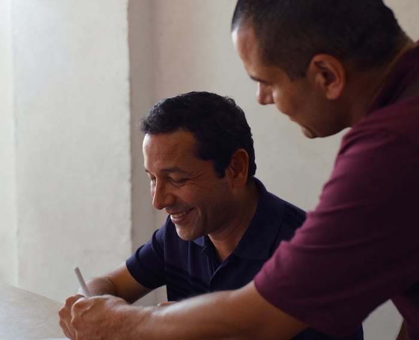

Preguntas frecuentes
Lo que todos preguntan antes de empezar.
39 respuestas simples, sin letra chica: tu empresa, tu marca y tus trámites.
Temas: Constituir tu empresa (13) · Registrar tu marca (14) · Trámites y confianza (12)

Constituir tu empresa
Depende de tres cosas: si tienes socios, si eres casado y si alguien aporta algo que no sea dinero. Con eso te enviamos el costo en tres líneas: nuestro honorario, los derechos notariales y las tasas del Estado. Todo antes de que pagues.
Te damos un rango honesto por etapas: reserva de nombre, firma, escritura, inscripción en SUNARP y RUC. No prometemos una fecha exacta porque esa parte depende de SUNARP. Lo que sí hacemos es avisarte en qué va, aunque no haya novedad.
Casi siempre: tu DNI, dos o tres opciones de nombre, la dirección del negocio y el monto de capital. Si tienes socios o eres casado, se suman uno o dos documentos. Te mandamos la lista exacta por WhatsApp para que no pierdas un viaje.
La EIRL es de una sola persona natural. La SAC y la SRL necesitan de 2 a 20 socios. En la SAC los socios tienen acciones y, si uno quiere vender, los demás tienen preferencia para comprar, salvo que el estatuto diga otra cosa. En la SRL las participaciones se transfieren por escritura pública, que se inscribe en SUNARP. Con tres preguntas te decimos cuál te conviene.
Sí. Si vas a ser el único dueño, la opción más común es la EIRL. La SAC y la SRL piden al menos dos socios.
En la SAC, la SRL y la EIRL, la empresa responde con su propio patrimonio y los socios, hasta lo que aportaron, salvo casos excepcionales como el fraude. Por eso conviene separar desde el inicio tus cuentas personales de las de la empresa.
No. La ley no exige un monto mínimo, así que puedes empezar con un capital pequeño. Lo importante es que sea real, porque queda declarado. Si en vez de dinero aportas un bien, como una máquina o un vehículo, se valoriza y se detalla.
Depende de con qué aportes. Si el dinero o el bien es de los dos, tu pareja participa en la firma. Si es un bien propio, por herencia o de antes del matrimonio, no hace falta. Te lo decimos antes de firmar, no en la notaría.
Sí. Muchas empresas arrancan con el domicilio del dueño. Lo importante es que sea una dirección real, donde te pueda llegar una notificación de SUNAT.
Para facturar como empresa, no. Tu empresa tiene su propio RUC, el que empieza con 20. Puedes mantener el tuyo y abrir el de la empresa: nuestro contador aliado te explica para qué sirve cada uno.
Es un trámite en SUNARP que guarda el nombre de tu empresa por un plazo corto, para que nadie más lo inscriba mientras se firma la escritura. Antes revisamos que no exista uno igual o muy parecido.
Cuando SUNARP inscribe la empresa, se genera su RUC, el que empieza con 20. Luego hay que activarlo con tu clave SOL para emitir comprobantes. Esa activación es parte de la asesoría contable que incluimos.
Sí. Puedes ser socio o titular con tu carné de extranjería. Si solo tienes pasaporte, te confirmamos antes qué pide la notaría en tu caso.
Registrar tu marca
Son dos partes: la tasa de INDECOPI, que se paga por cada clase, y nuestro honorario. Si tu empresa está inscrita en el REMYPE, la tasa tiene un descuento del Estado. Te confirmamos el monto vigente antes de empezar.
Si nadie se opone, suele tomar varios meses: primero la búsqueda, luego la solicitud, la publicación y 30 días hábiles en los que cualquiera puede oponerse. Si hay oposición, demora más. Te damos un rango antes de empezar y te avisamos en cada etapa.
Casi siempre sí. No se puede cuando es una palabra genérica, como llamarle «Panadería» a una panadería, o cuando ya existe una marca igual o parecida en tu rubro. Lo revisamos antes de presentar.
Se busca en la base de datos de INDECOPI. Lo hacemos antes de presentar, para que no pagues una tasa que se va a perder.
Es la categoría de lo que vendes. INDECOPI ordena los productos y servicios en clases, y tu marca queda protegida en las que registres. Si vendes productos y además das un servicio, puedes necesitar más de una, y cada clase se paga por separado.
Sí. En el Perú la marca es de quien la registra primero, no de quien la usa primero. Si otra persona la registra antes, puede pedirte que dejes de usarla. Por eso conviene hacerlo cuanto antes.
Puedes registrar solo el nombre, solo el logo o los dos juntos. Te recomendamos según cómo usas tu marca en el día a día: si el nombre es lo que la gente dice y busca, se empieza por el nombre.
Sí. Una persona natural puede ser dueña de una marca. Si después constituyes tu empresa, la marca se le puede transferir.
Después de que tu solicitud se publica, cualquiera tiene 30 días hábiles para oponerse. Si alguien lo hace, INDECOPI te da un plazo para responder y luego decide. Te avisamos apenas ocurra.
Te avisamos apenas llega y respondemos dentro del plazo. Si nadie responde a tiempo, el expediente se archiva y la tasa se pierde. Por eso hacemos la búsqueda antes de presentar: para no gastar en una marca que no iba a salir.
No. El registro en INDECOPI protege tu marca en el Perú. Si piensas vender en otro país, tienes que registrarla también allá.
Solo cuando tu marca ya está registrada y tienes el certificado. Mientras está en trámite, no lo uses.
Si pasan tres años seguidos sin usarla, cualquiera puede pedir que se cancele. Guarda facturas, publicidad y fotos donde aparezca: sirven para probar que la usas.
El registro dura 10 años. Se renueva dentro de los seis meses antes de que venza y, si se te pasa, hay seis meses más de gracia.
Trámites y confianza
Dentro de Lima Metropolitana y Callao, no: el motorizado de la notaría va a donde estés y firmas ahí mismo, de lunes a viernes y los sábados hasta el mediodía. Si estás fuera de Lima, la firma tiene que ser en Lima.
Sí. En Lima Metropolitana y Callao, la notaría va a donde estés: tu casa, tu negocio o tu oficina. Sirve si tienes poca movilidad, eres adulto mayor, cuidas a alguien o no puedes dejar tu negocio. Si no puedes firmar, la ley permite que otra persona firme a tu ruego y tú dejes tu huella; lo coordinamos con la notaría.
Sí. Atendemos de lunes a viernes, de 9:00 a 18:00, y los sábados, de 9:00 a 13:00. En ese horario puedes escribirnos por WhatsApp, visitarnos en la oficina o coordinar que la notaría vaya a firmar donde estés, en Lima Metropolitana y Callao.
Puedes hacerlo, y mucha gente lo hace. Lo que nosotros sumamos es una minuta redactada a la medida de tu caso, la asesoría contable para activar tu RUC, la notaría que va a donde estés y el seguimiento hasta el final. Tú decides qué te conviene.
La minuta es el documento donde queda escrito cómo será tu empresa: socios, aportes y reglas. La escritura pública es esa misma minuta elevada por el notario, y es la que se inscribe en SUNARP. Nosotros redactamos la primera y gestionamos la segunda.
Sí. Se acuerda entre los socios, se hace la escritura y se inscribe en SUNARP. Para ahorrarte ese trámite, desde el inicio dejamos tu objeto social lo bastante amplio para lo que piensas hacer en los próximos años.
En general: la partida registral del inmueble, la constancia de que no tiene deudas de impuesto predial, los documentos de identidad de las partes y, cuando corresponde, el pago del impuesto de alcabala por parte del comprador. La lista exacta depende del caso y de la notaría; te la enviamos antes.
Para que otra persona firme o haga trámites en tu nombre: en el banco, en una venta o ante una entidad. Según para qué lo necesites, se otorga por escritura pública y se inscribe en SUNARP. Te decimos cuál te corresponde.
Puede ser una buena opción. Antes de decidir, pregúntale tres cosas: ¿el precio incluye la notaría o solo el honorario?, ¿redactan según tus socios o usan un modelo?, y si mañana un socio quiere salir, ¿qué dice el estatuto sobre cómo se le paga? Si te responden con claridad, adelante.
Tenemos oficina física en San Juan de Lurigancho, frente a la estación Los Jardines, y puedes visitarnos. Nuestro RUC es 20614415950: verifícalo en SUNAT. Pagas por transferencia a la cuenta de la empresa, recibes tu comprobante y, si desistes, se aplica nuestra política de reembolsos.
Por transferencia bancaria a la cuenta de Hazlaw S.R.L., que te indicamos en la cotización. Por nuestros honorarios te emitimos el comprobante de pago que corresponde.
Si desistes antes de que empecemos, te devolvemos el 100 % de los honorarios. Si ya empezamos pero el trámite no se presentó, el 50 %. Las tasas ya pagadas a las entidades solo se recuperan si la entidad las devuelve. El detalle está en nuestra política de reembolsos.
¿Tu pregunta no está aquí?
Escríbenos por WhatsApp y te la respondemos sin compromiso.
Preguntar por WhatsApp Guía: cómo constituir una empresa en LimaGuía: cómo registrar una marca ante INDECOPI